Cơ sở hạ tầng và công cụ trong dự án phần mềm AI
Trường ĐH Công nghệ – Đại học Quốc gia Hà Nội
(Minh họa theo Figure 10-1)
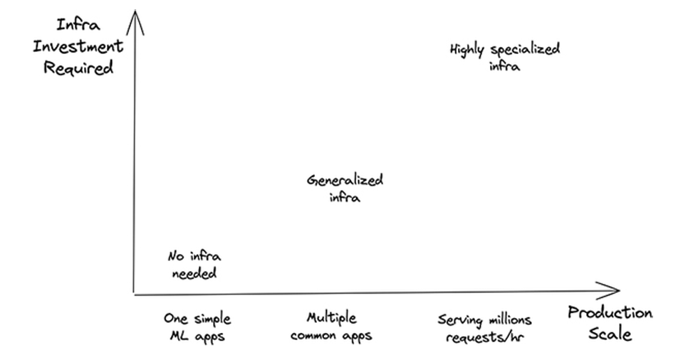
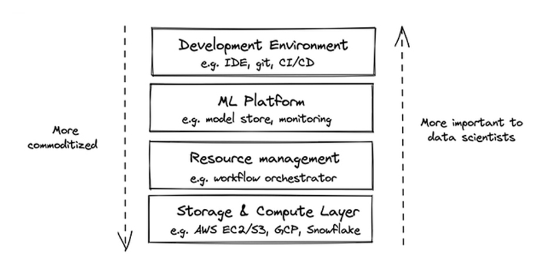
Gợi ý mạch trình bày (theo sách): Lưu trữ/Tính toán → Môi trường phát triển → Quản lý tài nguyên → Nền tảng ML.
Vận hành production còn cần theo dõi hiệu năng, độ tin cậy, mở rộng, bảo mật, năng suất đội — sẽ lồng ghép khi đi vào từng lớp.
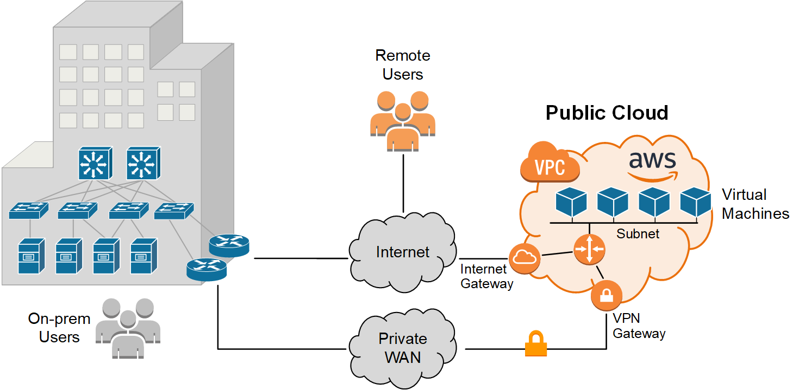
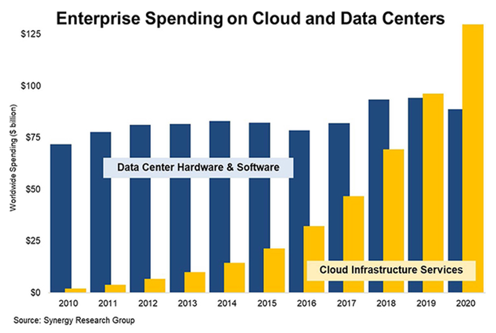
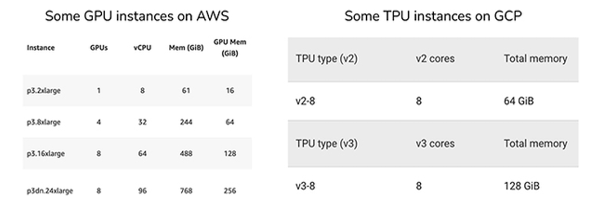
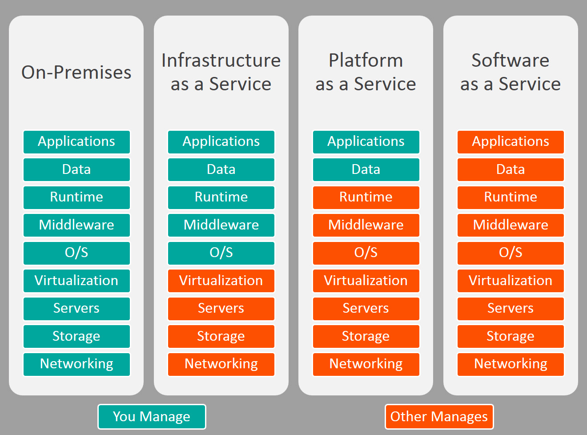
resources:
requests:
cpu: "4"
memory: "16Gi"
nvidia.com/gpu: "1"
limits:
cpu: "8"
memory: "24Gi"
nvidia.com/gpu: "1"
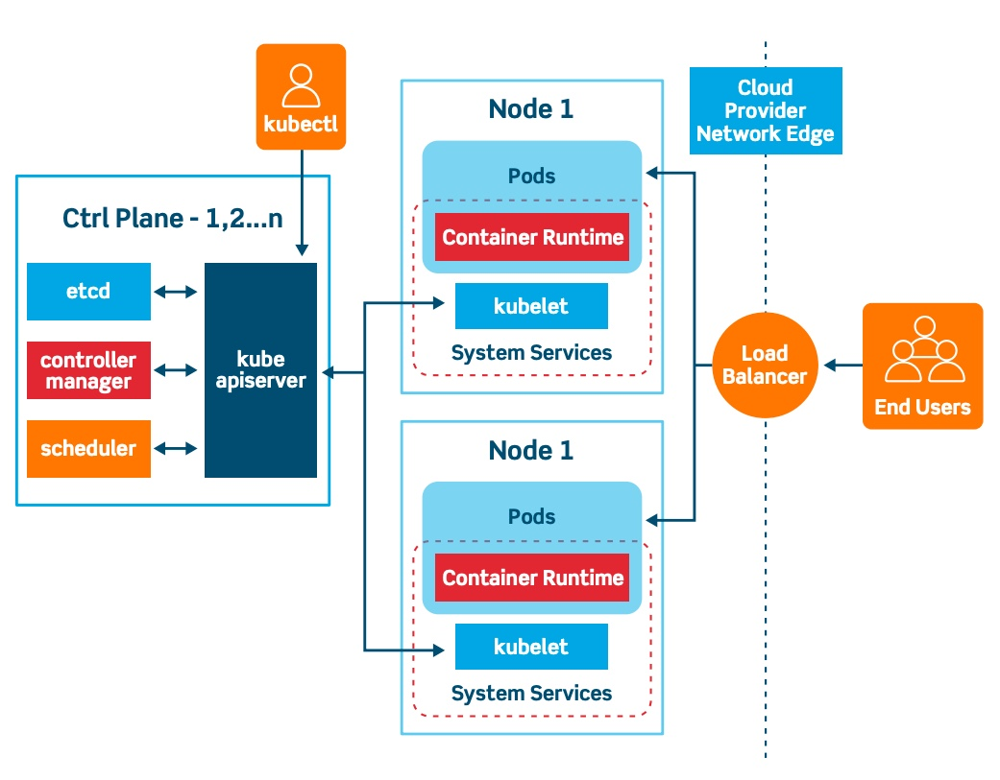
#!/bin/bash
#SBATCH --job-name=train-bert
#SBATCH --partition=gpu
#SBATCH --nodes=1
#SBATCH --gres=gpu:1
#SBATCH --cpus-per-task=8
#SBATCH --mem=32G
#SBATCH --time=02:00:00
#SBATCH --output=logs/%x-%j.out
module load cuda
srun python train.py --config configs/bert.yaml
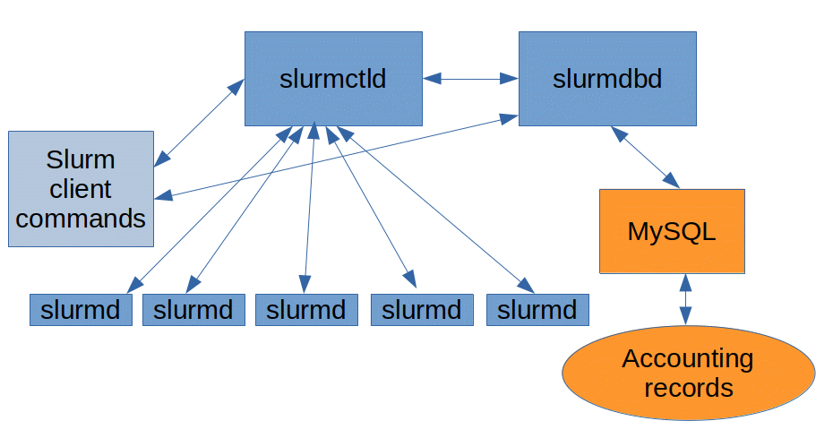
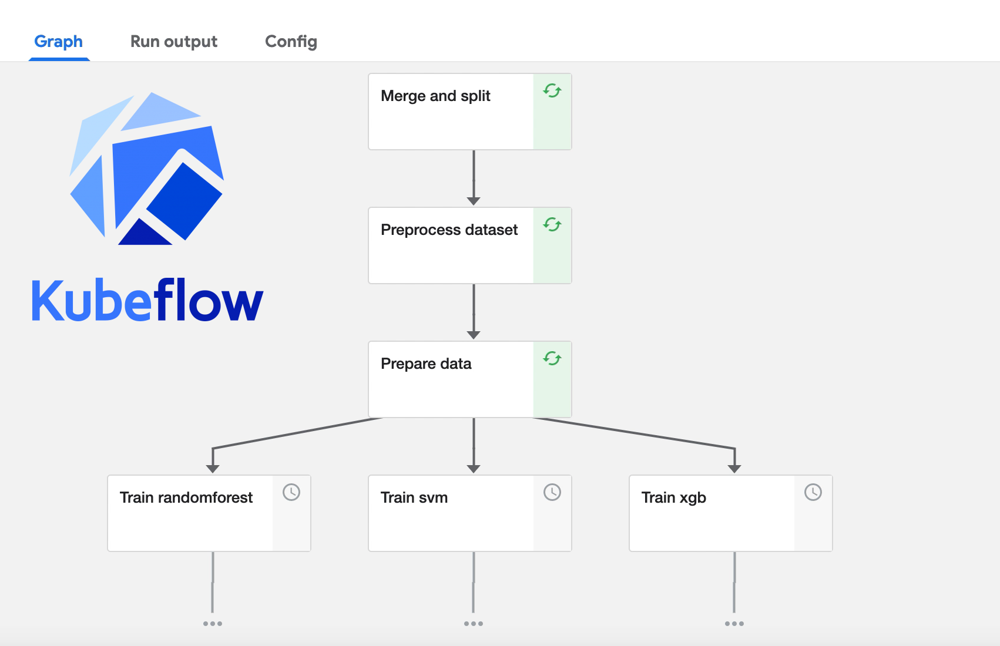
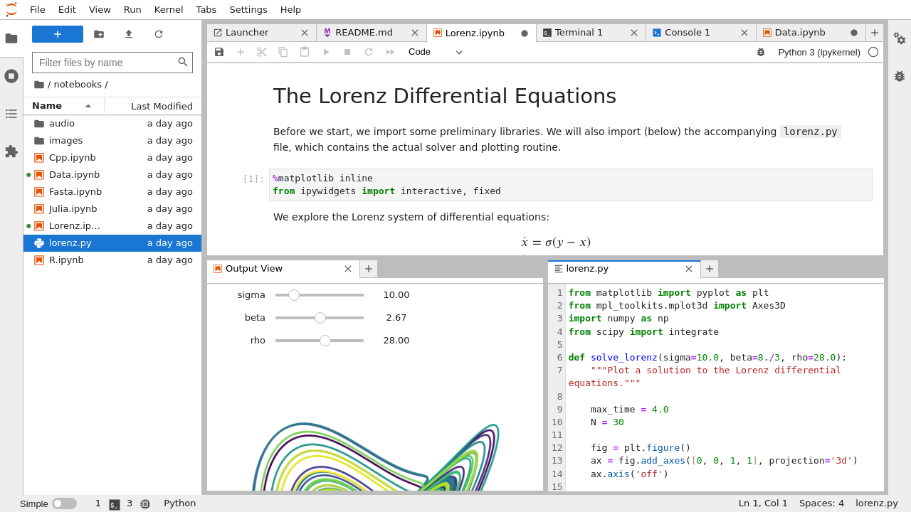
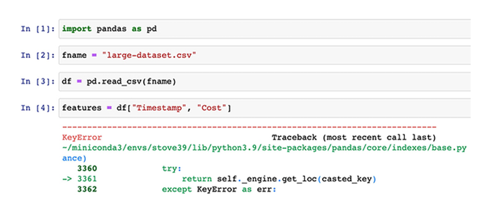
“Beyond Interactive: Notebook Innovation at Netflix”
docker build -t fancy-nlp:1.0 .
docker run --rm fancy-nlp:1.0
docker tag fancy-nlp:1.0 registry.example.com/fancy-nlp:1.0
docker push registry.example.com/fancy-nlp:1.0
# Dockerfile
FROM pytorch/pytorch:latest
RUN git clone https://github.com/NVIDIA/apex
RUN cd apex && \
python3 setup.py install && \
pip install -v --no-cache-dir --global-option="--cpp_ext" \
--global-option="--cuda_ext" ./
WORKDIR /fancy-nlp-project
RUN git clone https://github.com/huggingface/transformers.git && \
cd transformers && \
python3 -m pip install --no-cache-dir .
user_age → bucket_age; click history → embedding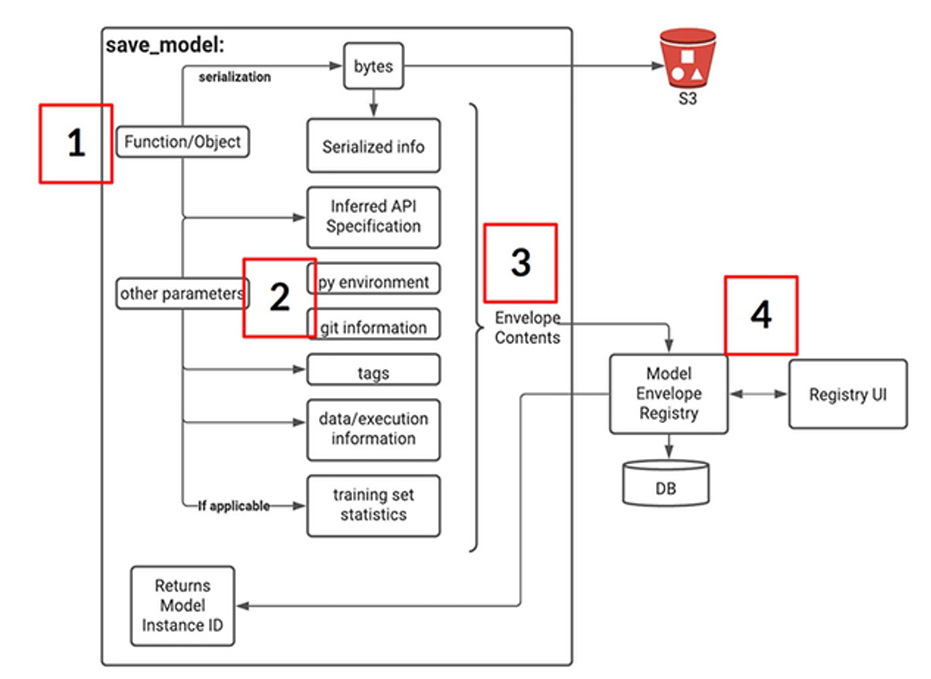